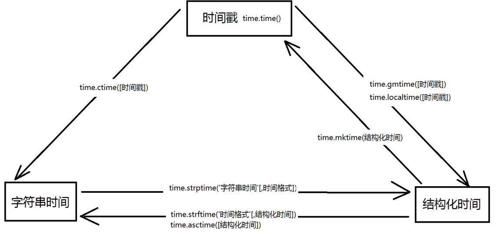

python中时间的表示方式 unix时间戳，字符串时间，格式化时间
时间模块有，time，datetime，calendar
#time模块
import time
#获取本地时间戳，返回浮点数
print(time.time()) #1566201346.1516223
#获取结构化时间
time.gmtime([时间戳]) ##,不传时间戳默认为当前UTC时间
print(time.gmtime()) #time.struct_time(tm_year=2019, tm_mon=8, tm_mday=19, tm_hour=7, tm_min=56, tm_sec=39, tm_wday=0, tm_yday=231, tm_isdst=0)
time.localtime([时间戳])#不传时间戳默认为当前本地时间
print(time.localtime()) #time.struct_time(tm_year=2019, tm_mon=8, tm_mday=19, tm_hour=15, tm_min=58, tm_sec=53, tm_wday=0, tm_yday=231, tm_isdst=0)
#将结构化时间转为时间戳
time.mktime(结构化时间)
print(time.mktime(time.localtime())) #1566201588.0
#字符串时间
#time.asctime([结构化时间]) #不传参默认值为time.localtime()
print(time.asctime(time.localtime())) #Mon Aug 19 16:01:26 2019
time.ctime([时间戳]) #不传参默认值为time.time()
print(time.ctime()) #Mon Aug 19 16:08:18 2019
#结构化时间转换为字符串时间
#time.strftime('时间格式'[,结构化时间]),结构化时间默认值为time.localtime()
print(time.strftime('%Y-%m-%d %H:%M:%S')) #2019-08-19 16:11:47
print(time.strftime('%Y-%m-%d %X')) #2019-08-19 16:13:15#字符串时间转化为格式化时间
#time.strptime('字符串时间'[,时间格式])
#时间格默认值为 %a %b %d %H:%M:%S %Y
#字符串时间必须和时间格式对应
print(time.strptime('Thu Jun 28 10:10:10 2018')) #time.struct_time(tm_year=2018, tm_mon=6, tm_mday=28, tm_hour=10, tm_min=10, tm_sec=10, tm_wday=3, tm_yday=179, tm_isdst=-1)
print(time.strptime('2019-08-19 16:18:10','%Y-%m-%d %H:%M:%S')) #time.struct_time(tm_year=2019, tm_mon=8, tm_mday=19, tm_hour=16, tm_min=18, tm_sec=10, tm_wday=0, tm_yday=231, tm_isdst=-1)
#指定程序暂停运行时间
#time.sleep(secs):程序暂停运行指定的秒数
time.sleep(5) #程序暂停运行五秒时间关系转换图

#datetime模块
相比于time模块，datetime模块的结构则更直观、更容易调用
datetime模块定义了5个类，分别是
datetime.date：表示日期的类
datetime.time：表示时间的类
datetime.datetime：表示日期时间的类
datetime.timedelta：表示时间间隔，即两个时间点的间隔
datetime.tzinfo：时区的相关信息from datetime import datetime
#datetime.datetime (year, month, day, hour , minute , second）
#返回表示今天本地时间的datetime对象
print(datetime.today()) #2019-08-19 16:26:06.777756
#返回表示当前本地时间的datetime对象
print(datetime.now()) #2019-08-19 16:28:25.854710
#根据时间戮创建一个datetime对象
print(datetime.fromtimestamp(time.time())) #2019-08-19 16:29:44.365201
#datetime对象操作
dt = datetime.now()
print(dt.date()) #2019-08-19
print(dt.time()) #16:33:38.263579
#返回替换后的datetime对象
print(dt.replace(year=2022,month=9,day=10)) #2022-09-10 16:35:39.721526
#按指定格式返回datetime对象
print(dt.strftime('%Y/%m/%d %H:%M:%S')) #2019/08/19 16:37:38#datetime.timedelta
timedelta主要用来实现时间的运算
使用timedelta可以很方便的在日期上做天，小时，分钟，秒的时间计算，如果要计算月份则需要另外的办法from datetime import datetime,timedelta
dt = datetime.now()
dt1 = dt + timedelta(days=-1) #昨天
dt2 = dt - timedelta(days=1) #昨天
dt3 = dt + timedelta(days=1) #明天
dt4 = dt + timedelta(hours=10) #10小时后
print(dt1,dt2,dt3,dt4)
#2019-08-18 16:44:27.535715 2019-08-18 16:44:27.535715 2019-08-20 16:44:27.535715 2019-08-20 02:44:27.535715
print(dt + timedelta(days=10,hours=100,minutes=100,seconds=100,milliseconds=100,microseconds=100))
#2019-09-02 22:28:49.705085#calendar模块
import calendar
#获取指定年份的日历字符串
print(calendar.calendar(2019))
#获取指定月份的日历字符串
print(calendar.month(2019,8))
August 2019
Mo Tu We Th Fr Sa Su
1 2 3 4
5 6 7 8 9 10 11
12 13 14 15 16 17 18
19 20 21 22 23 24 25
26 27 28 29 30 31
#以列表形式返回每个月的总天数
print(calendar.mdays)
#[0, 31, 28, 31, 30, 31, 30, 31, 31, 30, 31, 30, 31]
#返回指定月份的第一是周几以及每月的总天数
print(calendar.monthrange(2020,9))
(1, 30)#一些习题
#第一题：打印出当前距2019年8月1日有多少天多少小时多少分多少秒
from datetime import datetime
import calendar
#两个日期之间的差为
cha=datetime(2019,8,1)-datetime.now()
# print(cha)
#相差的天数
days=cha.days
#方法一：
#将cha分割成列表
cha_list1=str(cha).split()
cha_list2=cha_list1[2].split(':')
# print(cha_list2)
print("相差%d天%d小时%d分%d秒"%(days,int(cha_list2[0]),int(cha_list2[1]),int(cha_list2[2][:2])))
#相差小时数
#方法二：
#所剩余秒数为
remain_seconds=cha.seconds
#print(remain_seconds)
#相差的小时数
hours=remain_seconds//3600
#相差的分钟数
minutes=remain_seconds%3600//60
#相差的秒数
seconds=remain_seconds%60
print("相差%d天%d小时%d分%d秒"%(days,hours,minutes,seconds))
#输出
相差-19天6小时54分8秒
相差-19天6小时54分8秒#第二题：打印出20个月之后的日期
#当前的时间为
#cur=datetime.now()
def getDate(cur,m):
#当前年
year=cur.year
#当前月
month=cur.month
#当前日
day=cur.day
#print(year,month,day)
#算出20个月的year month day
#总的月数
total_month=m+month
#需要增加的年数
y_plus=total_month//12
#新的月份
new_month=total_month%12 #0 1 2 .....11
#判断新的月份为0的情况
if new_month==0:
y_plus-=1
new_month=12
#判断当前的天数是否大于新的月份的总天数，如果比新月份总天数大，则把月份加1，再算出新的天数
#新月份的总天数
mdays=29 if new_month==2 and calendar.isleap(year+y_plus) else calendar.mdays[new_month]
if mdays<day:
#new_month+=1
#新的天数
day=mdays
#20个月之后的日期 2018
new_date=cur.replace(year=year+y_plus,month=new_month,day=day)
print(new_date)
#输出
2021-04-19打印出现在时间（字符串）
print(datetime.today()) #2019-08-17 16:45:34.339610
print(datetime.now()) #2019-08-17 16:45:34.339609
print(datetime.now().strftime('%Y-%m-%d %H:%M:%S')) #2019-08-21 12:26:19打印出指定格式的日期 2018年5月7日 星期六 08:01:02
def get_week(w):
if w=='1':
week='星期一'
elif w=='2':
week='星期二'
elif w=='3':
week='星期三'
elif w=='4':
week='星期四'
elif w=='5':
week='星期五'
elif w=='6':
week='星期六'
else:
week='星期日'
return week
# 字符串转换为格式化，拿到星期几
s_time=time.strptime('2018-05-07 08:01:02','%Y-%m-%d %H:%M:%S')
w1=time.strftime("%w",s_time)
# 指定格式输出
print(time.strftime("%Y{}%m{}%d{} {} %H:%M:%S",s_time).format('年','月','日',get_week(w1)))
###2018年05月07日 星期一 08:01:02打印出当前距离指定时间差多少天，多少时，多少分，多少秒
from datetime import timedelta
def cha(year,month,day):
a=datetime(year,month,day)-datetime.now()
print('当前时间距%s年%s月%s日还有%s天%s时%s秒'%(year,month,day,a.days,a.seconds//3600,a.seconds%60))
cha(2021,3,1)##当前时间距2021年3月1日还有559天8时22秒一、有一个人从2015-01-01开始过上了三天打渔两天晒网的日子，问今天该打渔还是晒网？明年的今天呢
from datetime import datetime
def dy_sw(year,month,day):
dt = datetime(year,month,day)-datetime(2015,1,1)
if dt.days%5<3:
print('打渔')
else:
print('晒网')
dy_sw(2019,8,23)
#输出
打渔done。